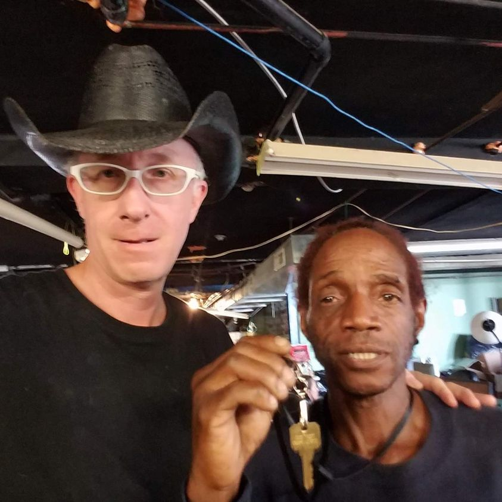

Timeline photos
This is “Red.”
This picture was taken in October 2018. He is showing the key to his new home.
There was a massive mobilization of the Continuum of Care to house the 60+ people in our tent community. Most got housing. Some never did. But Red did.
He was so excited about it.
Red is a super hard worker. He always has a job or wants a job. But, as is the case in low income communities, life gets in the way. His car would break down. He’d get evicted. He’d get thrown out by a girlfriend.
He’s been homeless off and on since 2018.
I saw him last week in line trying to get one of the free phones that people offer.
When you have very few resources and no safety net of a family to catch you when you fall you often are tossed around like drift wood in the ocean. You can do very little other than take the good with the bad as it comes to you. No matter how positive and hard working you are, the powers of life often just take control.
The fastest way for a guy like Red to get back on his feet is having a place where he can fall to. Like a tent city. A place where he can come and go as he needs to for his lifestyle and work. A place that lets him be physically safe while he regroups. A place that respects him for who he is and understands what he’s going through.
That house he got in 2018 is long gone. It turns out that wasn’t the only thing he needed. Housing First does not always work. It works for some people in some situations… usually the easier cases.